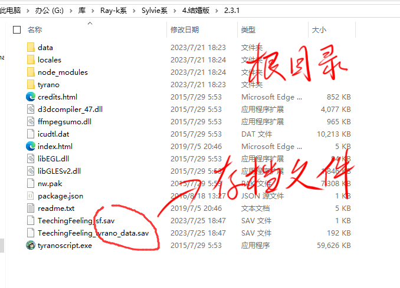
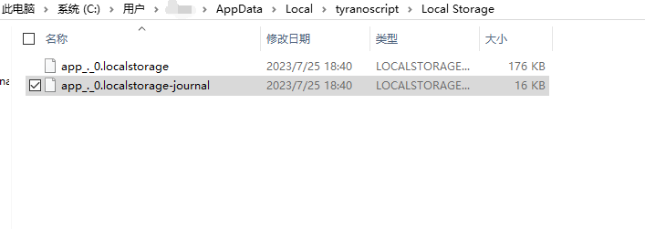
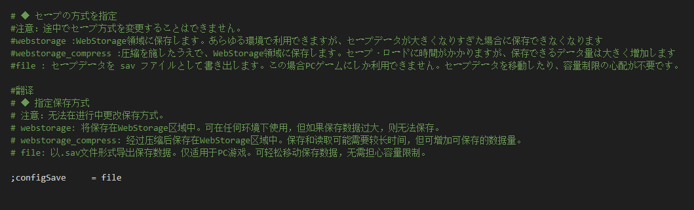
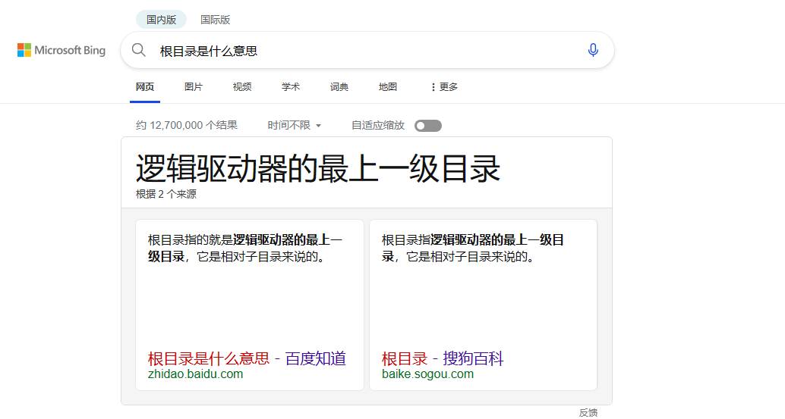
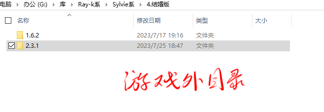

存档在哪啊！存档不兼容啊怎么！手机文件目录翻烂了也没存档啊！！！ 。。。 这是怎么会逝呢？ - - - - - - - - - - - - - -
- - - - - - - - - - - - - - 本贴对teaching feeling的存档系统进行详细介绍，内容包括PC端以及手机端，覆盖多版本的通用寻找办法，以及附加的额外小知识（p.s.们），并且提供答疑，在贴中回复提问即可。 - - - - - - - - - - - - - - （尝试Android/data。。。！！！）
---- PC端的游戏存档 - - - - 若pc端使用webstorage（webstorage_compress ）存档方式（ver1.x版本默认webstorage），则存档在本机『C:\Users\你的用户名\AppData\Local\tyranoscript\Local Storage』（示例路径，或有变动，注意tyranoscript或者与游戏相关即可），是后缀.localstorage和.localstorage-journal的两个文件。  若使用file存档方式（几乎都是），则存档在游戏根目录中，是后缀.sav的两个文件。 
---- 手机端的游戏存档 - - - - 关于手机端，手机的存档位置位于手机系统根目录其建立的数据文件夹中。也即，手机端寻找存档请进入手机系统根目录，进入『data/data』（或『data/user』），寻找游戏的数据文件夹，在其中寻找辨认存档。 一种辨认存档的可行的办法，进入游戏，随便存一个档，记住你存档的时间，在游戏的数据文件夹中比对文件修改时间。 一种提供给尚未或无法root的吧友的可行的办法，使用手机的备份功能备份出游戏的应用数据，得到游戏存档，若想要更换存档，就恢复有你希望的存档的应用数据。 若使用file存档方式（几乎都是），则存档在游戏根目录中，是后缀.sav的两个文件。 一些示例存档路径（示例路径，或有变动，只提供参考，寻找时依然应遵循上述辨认存档的办法）
①『data/data/com.TeachingFeeling/app_xwalkcore/default/local storage』原版汉化，（教培计划版，双文件存档）②『data/data/com.GreatLiu.TeachingFeeling/app_webview/default/local storage』（ver1.6.2结婚版，有一堆文件，它们都是存档）③（我一个人下遍所有版本挨个看是不可能的，吧友可在回复中补充，说明路径，版本）这些路径随设备的不同、游戏版本和来源的不同会有所变化，其中一些重点文件和文件夹是『com.xxx（包名）xxx』、『local storage』（存档常在『local storage』目录下，类似上文pc端使用webstorage存档方式）、后缀.localstorage和.localstorage-journal的文件（常是存档文件）---- p.s.们 - - - - p.s.0 游戏的存档 Teaching Feeling的存档不是按存档槽分的，存档系统只能整个替换，换句话，无法做到“一槽的存档不变，只改二槽的存档，在三槽加个存档” p.s.1 存档策略 tyranoscript，也即TeachingFeeling的游戏引擎，其内部提供了三种存档方式，分别是 webstorage、webstorage_compress 和 file，其定义在游戏的『..\data\system\Config.tjs』中，可自行修改。PC端游戏大多使用file方式，也就是在游戏根目录中生成.sav存档文件，可以方便地进行修改。 tyranoscript的存档策略如下  （如需更改仅需更换『=』后的内容为webstorage、webstorage_compress 或 file即可） p.s.2 根目录是什么？   根目录指逻辑驱动器的最上一级目录，它是相对子目录来说的，根目录的目的就是存储子目录（也称为文件夹）或文件，简单说，打开“我的电脑”，双击C盘就进入C盘的根目录，双击D盘就进入D盘的根目录，双击游戏就进入游戏的根目录。游戏根目录多指游戏安装所在的文件夹，即游戏安装目录，在查找、修改或增删文件时，应当去安装游戏时创建的文件夹中进行。 p.s.3 webstorage是什么？ webstorage是浏览器所使用的缓存存储方式，因为tyranoscript基于Web开发，因此也可以使用，有利于游戏的跨平台兼容。webstorage为每个访问网页的用户提供了缓存存储，缓存存储在本地，其路径在『C:\Users\你的计算机名\AppData\Local\浏览器名\***略，以浏览器种类为主***\Local Storage』 p.s.4 手机端的根目录 手机的根目录分有sd卡根目录和系统根目录，sd卡根目录是常用根目录，是你打开手机自带的文件管理器所打开的目录，系统根目录是真正的根目录，这里文件的查看和编辑需要root权限。 p.s.5 应用数据的存放位置 手机应用程序的数据存放在系统根目录『data/data』（或『data/user』）中，此处是各个应用程序建立的数据文件夹，其文件夹名为应用包名，格式常为『com.xxx』 p.s.6 备份办法示例 以MIUI为例，可按照『设置』→『我的设备』→『备份与恢复』→『手机备份恢复』，找到『第三方应用程序和应用数据』单独选中游戏进行备份，备份出的.bat文件可以使用『MT管理器』查看。
本贴是2023.8.20版
历史版（累计有阅读数：454、点赞数：25、回复数：1）：
2023.8.7版（累计有阅读数：454、点赞数：25、回复数：1）